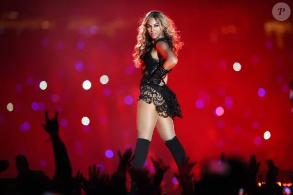
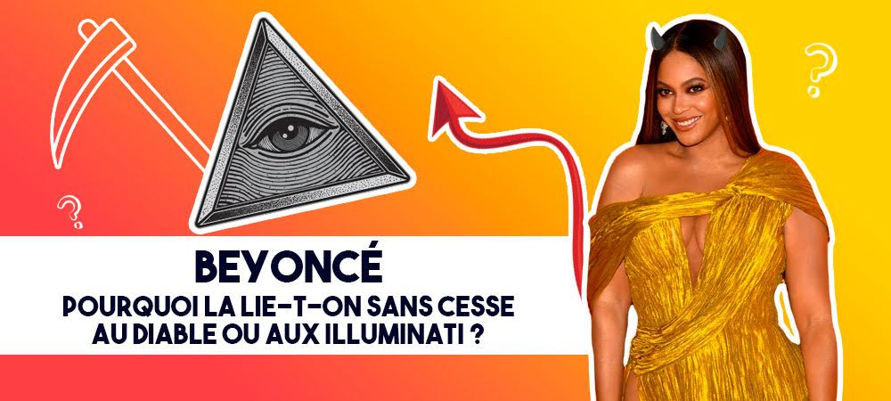
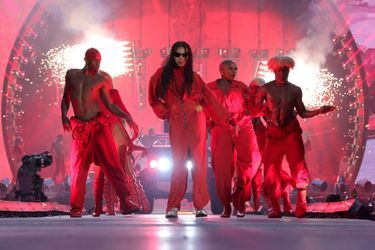
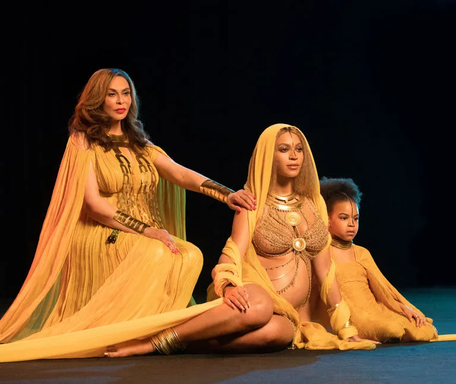

Révélations troublantes
De récentes révélations troublantes suggèrent que Beyoncé, la superstar mondiale, pourrait avoir conclu un pacte mystérieux avec des forces obscures. Selon des sources anonymes, son ascension fulgurante dans l'industrie musicale, depuis les Destiny's Child jusqu’à son immense carrière solo, ne serait pas le simple fruit de son talent, mais plutôt d’un arrangement occulte.
Ces éléments inquiétants sont également perçus dans ses collaborations avec son mari, Jay-Z, un autre géant de l'industrie musicale, que certains qualifient de « roi des Illuminati ». Ensemble, ils auraient utilisé leur influence pour contrôler les masses et véhiculer des messages subliminaux à travers la culture populaire.
Des rituels cachés dans les performances
Les théoriciens du complot affirment que les spectacles de Beyoncé seraient en fait des rituels dissimulés. Lors de sa prestation au Super Bowl en 2013, certains ont remarqué des gestes et des symboles qui, selon eux, renverraient à des pratiques occultes.
Un autre exemple souvent cité est son clip "Formation", où des éléments ésotériques et symboles controversés ont été identifiés par des experts autoproclamés. Ils prétendent que ces signes sont des appels discrets à des forces supérieures et que Beyoncé chercherait ainsi à accroître son emprise sur ses fans et l’industrie.
Blue Ivy : Une héritière d'un sombre héritage ?
Certains avancent que sa fille, Blue Ivy, serait l'incarnation de ce plan machiavélique, destinée à perpétuer cette génération de contrôle mondial. Le prénom même de Blue Ivy aurait, selon ces théoriciens, une signification cachée.
Les talents précoces de Blue Ivy, manifestés lors de ses apparitions sur scène avec sa mère, sont perçus comme un signe que Beyoncé prépare la jeune fille à prendre le relais dans ce supposé contrôle mondial.
L'enquête de Clara
Clara, une journaliste intrépide, a décidé de mener l’enquête. En scrutant les vidéos de Beyoncé, Clara découvre des symboles occultes dissimulés. Lors d’un concert, elle remarque un éclair lumineux que certains interprètent comme un message crypté.

Convaincue que cela pourrait être une piste, Clara se plonge dans une série d'interviews avec des experts autoproclamés en mysticisme et en symbolisme caché dans la culture populaire.
Un concert révélateur
Lors d’un concert de Beyoncé à Paris, Clara observe une étrange connexion entre la chanteuse et sa fille. Tandis que Blue Ivy monte sur scène pour accompagner sa mère, une énergie particulière semble émaner du duo.
Le public est en transe, captivé par chaque mouvement de la mère et de la fille. Pour Clara, il est évident que quelque chose d’insolite se produit, et elle décide de creuser plus profondément pour en comprendre les raisons.
La vérité au-delà des rumeurs
Finalement, Clara choisit d’écrire un article qui va au-delà des théories de complot. Elle met en lumière l'impact puissant que Beyoncé a sur la musique et la culture mondiale. Plutôt que de se concentrer sur des rumeurs inquiétantes, Clara décide de célébrer le talent et l'influence positive de l'artiste.
Les théories de complot, bien que fascinantes, ne doivent pas occulter l'incroyable travail de Beyoncé en tant qu’artiste, activiste et leader culturel.